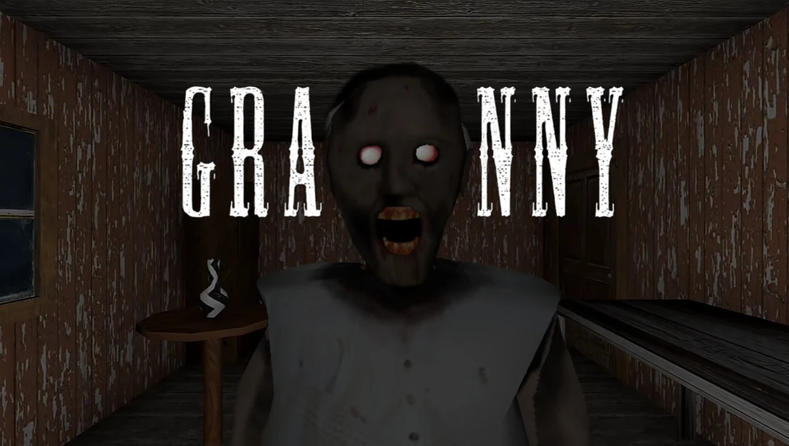

Granny, DVloper tarafından geliştirilen ve korku hayatta kalma türünde kendine sağlam bir yer edinen bağımsız bir oyundur. Oyuncular karanlık bir evde uyanır ve yaşlı ama son derece tehlikeli bir kadından kaçmak zorundadır. Sessiz adımlar atmak, gıcırdayan zeminlerden uzak durmak ve gerekli eşyaları toplamak hayatta kalmanın anahtarıdır. Oyun, farklı zorluk seviyeleri ve birden fazla kaçış yolu sunarak her seferinde gerilimi taze tutar. Basit görünen mekaniklerin altında dikkat ve sabır gerektiren bir deneyim barındıran Granny, korku severler için ideal bir tercihtir. BallasNet üzerinden oyunun detaylarını inceleyebilir ve benzer korku oyunlarını keşfedebilirsiniz.
SİSTEM GEREKSİNİMLERİ
Minimum
- OS: Windows 7 / 8 / 10 64-bit
- İşlemci: Intel Core i5-750
- RAM: 4 GB
- Ekran Kartı: DirectX 11 uyumlu
- Disk: 650 MB
Önerilen
- OS: Windows 10 / 11
- İşlemci: Intel Core i5 veya daha güçlü
- RAM: 8 GB
- Ekran Kartı: DirectX 11 / 12
- Disk: 1.5 GB
LİNKLER
RESMİ İNDİRME LİNKLERİ
BENZER OYUNLAR
Granny Nedir?
Granny, DVloper tarafından yaratılan bağımsız bir korku ve hayatta kalma oyunudur. Oyuncu karanlık bir odada uyanır ve yaşlı ama son derece tehlikeli bir kadının evinde mahsur kaldığını fark eder. Eşyaları toplayıp kilitleri açarak kaçış yollarını bulmak zorundasınız. Gıcırdayan zeminler, düşen eşyalar ve aniden ortaya çıkan tehlike, gerilimi sürekli yüksek tutar. Farklı zorluk seviyeleri ve birden fazla kaçış rotası sayesinde her oynayışta yeni bir deneyim sunar.
Oynanış Özellikleri
- Sessizce ilerleyin, gürültü yapmak Granny'yi üzerine çeker.
- Anahtar, tornavida, çekiç gibi eşyaları toplayarak kilitleri açın.
- Kapı, araba veya kanalizasyon gibi farklı kaçış yolları arasından seçim yapın.
- Practice, Easy, Normal, Hard ve Extreme olmak üzere 5 zorluk seviyesi bulunur.
- Her ses ve adım, oyunun atmosferini daha da gerilimli hale getirir.
Granny İpuçları ve Tavsiyeler
Granny’de sessiz hareket etmek hayatta kalmanın en önemli kuralıdır. Gıcırdayan zeminlerden mümkün olduğunca uzak durun ve eşyaları yere düşürmemeye özen gösterin. İlk oyunlarda Practice modunu deneyerek evi keşfedebilirsiniz. Kaçış için gerekli eşyaların yerlerini ezberlemek işinizi kolaylaştırır. Ayrıca saklanma yerlerini bilmek, Granny sizi fark ettiğinde hayat kurtarır. Sabırlı olun, aceleci davranmak genellikle sonunuzu getirir.